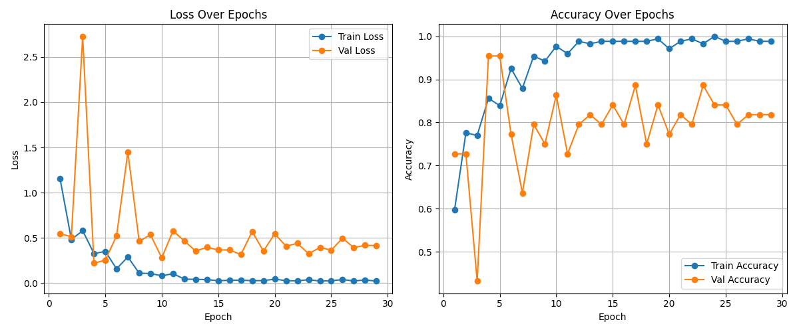
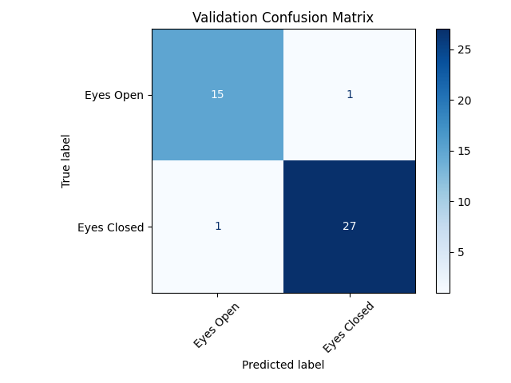
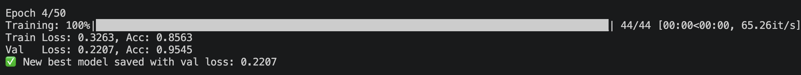
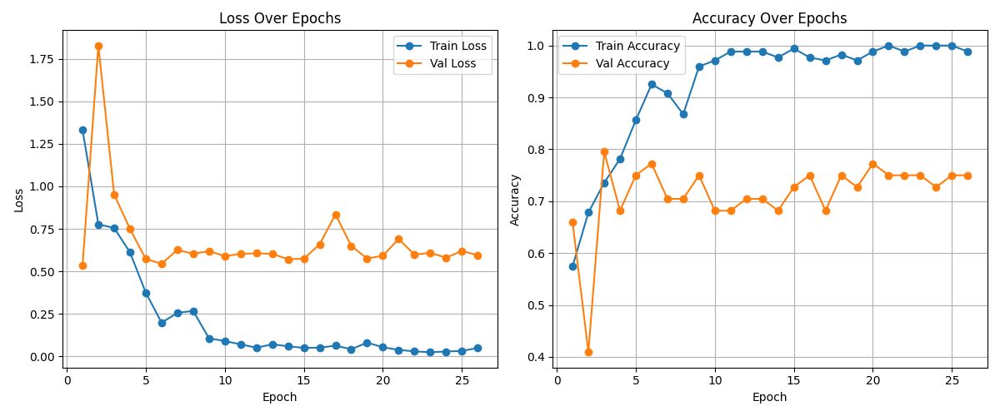
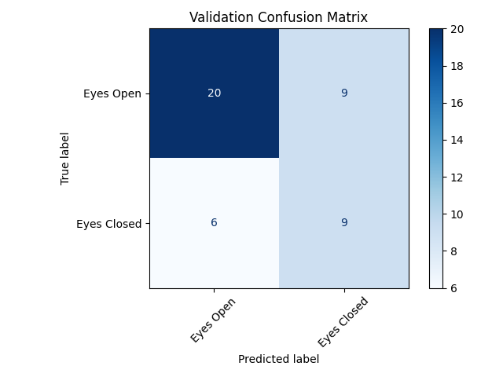
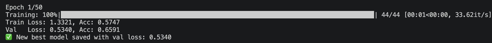

Converts single channel EDF recordings to log scaled spectrograms and classifies Eyes Open vs. Eyes Closed (binary) with a 2D CNN using BatchNorm, Dropout, and early stopping.
No BioSig or MATLAB setup needed, this is pure Python with PyTorch, pyedflib, and scipy. This script reads .edf files and trains on Eyes Open and Eyes Closed plus two movement categories, so it needs files from EEG_CNN_Dataset_EDF.zip on Zenodo. The .set format dataset will not work here since it does not include the baselines.
The DATA_FOLDERS dictionary near the top of the script is hardcoded to one specific machine and uses folder names that do not match the standard EEG_Classification naming convention used elsewhere in this project (for example Open_and_Close_left_or_right_fist rather than Task1_Real_Left_Fist and Task1_Real_Right_Fist combined). Update these paths to point at your own copies of the Eyes Open and Eyes Closed baseline folders, plus whichever movement class folders you want included.
The baseline CNN in Script 01 operates on raw time series, which requires the network to learn frequency selective filters from scratch. Converting to a spectrogram first provides explicit frequency time structure as a 2D image, making the classification problem more tractable for a shallow network. EEG motor imagery signals are largely characterized by power changes in the alpha (8–12 Hz) and beta (13–30 Hz) bands, which are immediately visible in a spectrogram but buried in raw time domain samples.
def edf_to_spectrogram(file_path, target_size=(64, 64)):
f = pyedflib.EdfReader(file_path)
signal = f.readSignal(0) # first channel only
fs = f.getSampleFrequency(0)
freqs, times, Sxx = spectrogram(signal, fs=fs, nperseg=256, noverlap=128)
Sxx = np.log1p(Sxx) # log-scale compresses dynamic range
# Crop/pad to fixed 64×64 tensor
Sxx_resized[:h, :w] = Sxx[:h, :w]
return torch.tensor(Sxx_resized).float().unsqueeze(0) # [1, H, W]
class EDF2DCNN(nn.Module):
def __init__(self, num_classes):
self.conv1 = nn.Conv2d(1, 16, 3, padding=1)
self.bn1 = nn.BatchNorm2d(16)
self.conv2 = nn.Conv2d(16, 32, 3, padding=1)
self.bn2 = nn.BatchNorm2d(32)
self.dropout = nn.Dropout(0.5)
self.fc1 = nn.Linear(32 * 16 * 16, num_classes)The log1p transform is essential: raw spectrogram power spans several orders of magnitude, and without log scaling the network sees mostly noise in the low power bins. The 50% overlap between STFT windows (nperseg=256, noverlap=128) provides good time resolution for the 4-second motor imagery trials without oversampling.
The training loop includes patience based early stopping and a ReduceLROnPlateau scheduler, which reduces the learning rate by half after 3 epochs without validation improvement. The best model checkpoint is saved and reloaded before final evaluation, so the reported confusion matrix reflects the best generalization rather than the last epoch.
This script classifies Eyes Open vs. Eyes Closed using spectrogram input — the same binary task as Script 01, but with a 2D CNN on frequency time images rather than a 1D CNN on raw time series. The comparison between the two directly measures how much explicit frequency structure helps.
The spectrogram CNN is a binary classifier (Eyes Open vs. Eyes Closed), not 4-class as previously documented. Early stopping with patience=25 captures the best validation checkpoint. Val accuracy ranged from 65.91% to 95.45%, mean 78.41%. The spread reflects initialization sensitivity compounded by an unstable early stopping dynamic on a small dataset — in some runs the best checkpoint was captured at epoch 1 or 2, before the model has meaningfully trained.
| Metric | Value |
|---|---|
| Best val accuracy | 95.45% — Trial 2, epoch 4 |
| Worst val accuracy | 65.91% — Trial 10, epoch 1 |
| Mean val accuracy | 78.41% |
| Chance baseline | 50.00% |
| Margin above chance (mean) | +28.41 pp |
| Epochs / LR / Patience | 50 / 0.001 / 25 |






The 78.41% mean val accuracy makes this the strongest binary result after the baseline script. Converting raw EEG to log scaled spectrograms before classification gives the 2D CNN explicit frequency time structure to work with, which explains why it outperforms the raw signal baseline on average. The main problem is that reported accuracies are validation set numbers at the best early stopping checkpoint — not held out test accuracy. When the best epoch is epoch 1, the number reflects the random initialization rather than learning. A proper train/val/test split where the test set is never touched during training or early stopping would produce more trustworthy numbers.
78.41% mean binary val accuracy is the best average result in the project. If this holds on a proper held out test set, the spectrogram approach outperforms the raw signal baseline by ~8 points. Worth formalizing with a fixed seed and clean test split.